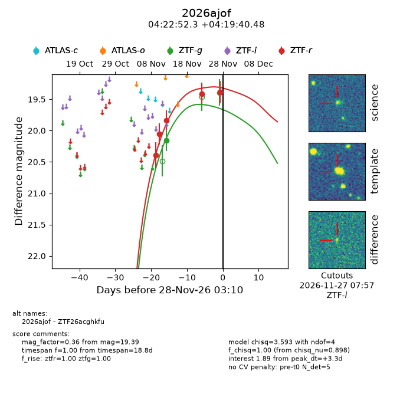
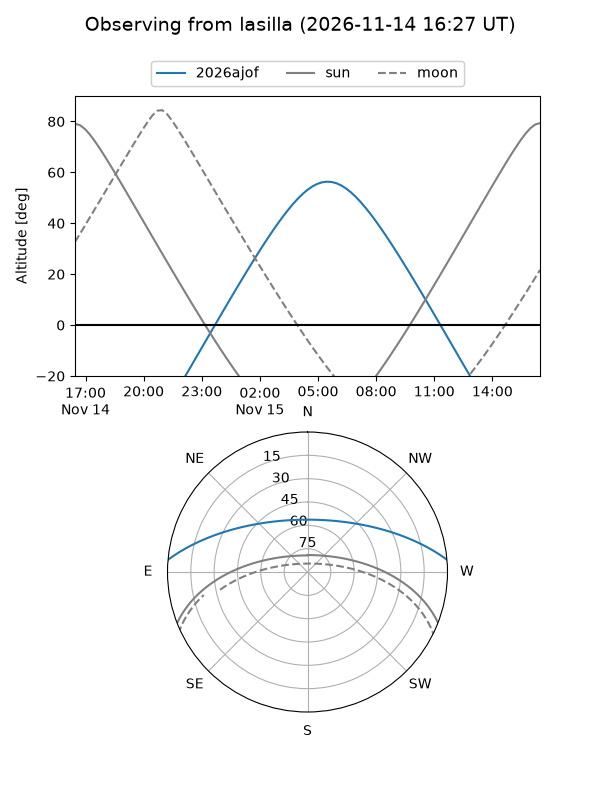
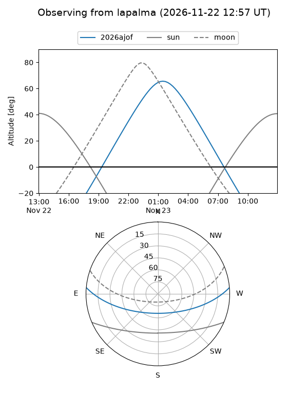
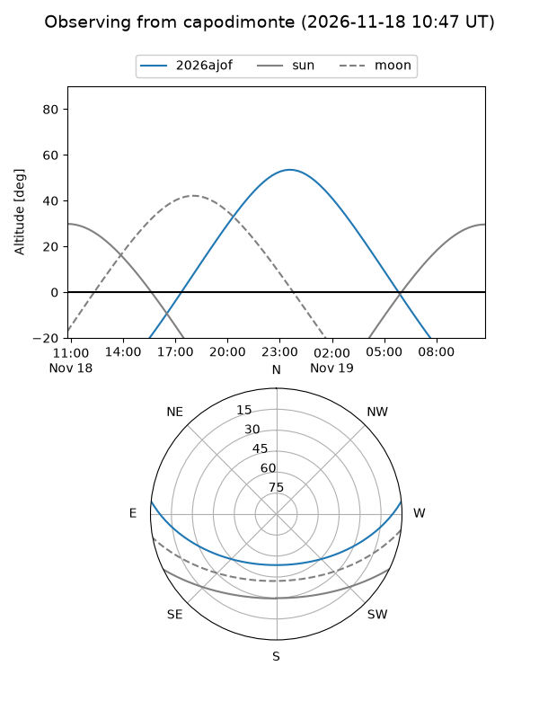
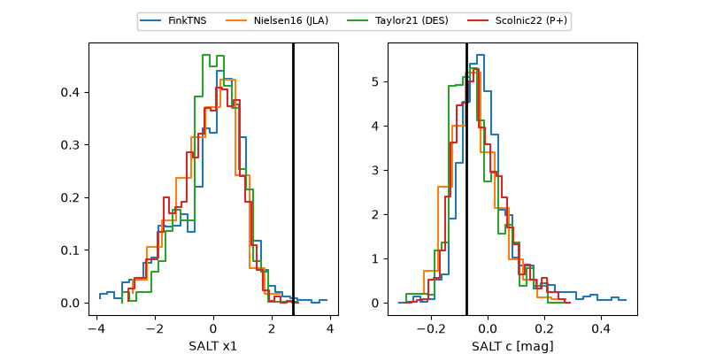

2026ajof
Target 2026ajof at 2026-11-28 03:11
Aliases and brokers:
FINK-ZTF: ztf.fink-portal.org/ZTF26acghkfu
Lasair-ZTF: lasair-ztf.lsst.ac.uk/objects/ZTF26acghkfu
ALeRCE-ZTF: alerce.online/object/ZTF26acghkfu
YSE-PZ: ziggy.ucolick.org/yse/transient_detail/2026ajof
TNS name: wis-tns.org/object/2026ajof
Direct TNS query: direct search
alt names
ZTF26acghkfu (ztf,fink_ztf)
2026ajof (tns,yse)
Coordinates:
equatorial (ra, dec) = 65.7178,+4.32791
equatorial (HMS+DMS) = 04:22:52.27,+04:19:40.48
galactic (l, b) = (189.6703,-30.09407)
Flags:
peak dt: +3.3
Photometry:
last ztfg=19.39, ztfr=19.39
2 ztfg, 5 ztfr detections
Lightcurve

Visibility



Additional plots
